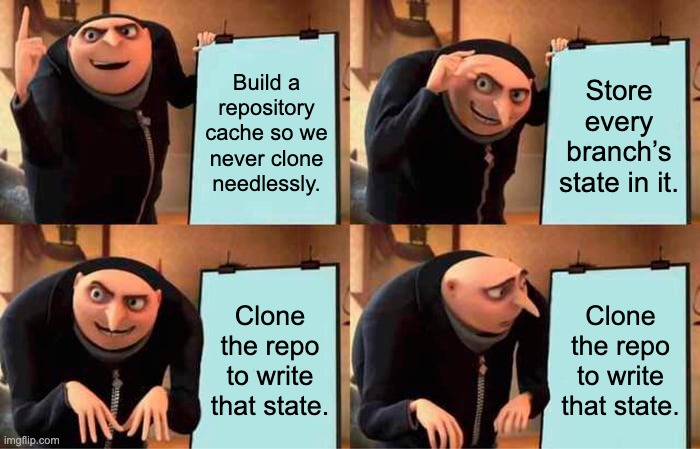
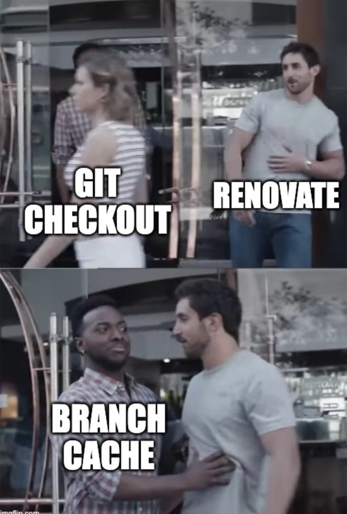

The bot that cloned your repo to find out it had nothing to do
A case study in deleting work instead of speeding it up. Renovate, 2022 to 2023.
TL;DR. During my internship at Mend in May to July 2022, I shipped a series of small PRs that let Renovate decide from its cache alone that a repository had nothing to do, instead of cloning it to find out. When Rhys Arkins and I measured it on the hosted app at the time, clones dropped by roughly 40 to 50 percent. By early 2023, Rhys reported the hosted app skipping git clone on 50 to 70 percent of runs. Almost none of these changes made anything faster. They made things stop happening.
My PRs are listed at the end if you want to skip straight to the code.
What Renovate does every run
Renovate is the dependency update bot. Point it at a repo and it opens PRs whenever a dependency has a new version. For each repo it runs a pipeline: read the config, extract dependencies, look up versions, then for every pending update decide whether a branch and PR need creating, updating, or leaving alone.
The hosted app at Mend ran this loop across a very large number of repositories, many of them hourly. Most of those runs found nothing new. Same base commit as last time, same open PRs, same versions upstream. The correct amount of work for such a run is roughly zero.
We were cloning the repo anyway. Worse, once we had cloned it we were regenerating lock files for branches that already had the right lock file.
Why the clone kept happening
Two pieces of infrastructure already existed when I started on this in May 2022, both designed by Rhys Arkins years earlier.
The first is lazy git. Since July 2020, initRepo no longer cloned. Instead every function in lib/util/git/index.ts that needs a working tree begins with await syncGit(), which clones on first call and is a no-op afterwards. If nobody calls it, no clone.
The second is the repository cache, added in June 2020. It persists between runs and stores, among other things, the base branch SHA and the last extract result. If the base branch has not moved, extraction is skipped and its cached result reused. For a repo with no open Renovate branches, this already avoided the clone.
The trouble started the moment a repo had even one Renovate branch. Then three things forced git work on every run:
- Every branch state check called git before it looked at anything else.
isBranchModified,isBranchStale(nowisBranchBehindBase) andisBranchConflictedall opened withawait syncGit(). Asking "has a human pushed to this branch?" meant cloning the repo to find out. - Writing the cache itself needed git. At the end of each run,
setBranchCachelooped over every branch and calledgetBranchParentShaandisBranchModifiedto fill in the cache entry. Both went straight to git. So even a run that had otherwise done nothing would clone, purely so it could record that it had done nothing. - Every existing branch was rebuilt from scratch.
processBranchchecked out the base branch, re-applied the version bumps, regenerated lock files, ran post-upgrade commands, and only then discovered the result was byte-identical to what was already on the branch. Regenerating a lock file means installing the package manager and running it. For a Poetry or Go modules repo, that means installing the toolchain in a sidecar container and runningpoetry update --lockorgo get, which is not a cheap way to learn that nothing changed.
Cache present, cache populated, cache ignored until after the expensive part.

Step one: a one line move
The first PR was tiny. #16246, merged 1 July 2022, moved a single await checkoutBranch(config.baseBranch) in processBranch from the top of the function to after the schedule check. Net diff: two lines added, three removed.
// before (simplified)
export async function processBranch(branchConfig) {
await checkoutBranch(config.baseBranch); // git, every branch, every run
let branchExists = gitBranchExists(config.branchName);
...
if (!isScheduledNow(config)) return { result: 'not-scheduled' };
// after (simplified)
export async function processBranch(branchConfig) {
let branchExists = gitBranchExists(config.branchName);
...
if (!isScheduledNow(config)) return { result: 'not-scheduled' };
await checkoutBranch(config.baseBranch); // only if we got this farOn my laptop checkoutBranch took 300 to 500 ms. Multiply that by the number of branches in a busy repo and it adds up. The interesting part, though, was what Rhys asked in review: could it move even later, and could I prove that a repo whose updates were all out of schedule now finished a run without cloning at all? I tested with repositoryCache=enabled, ran twice, and posted the debug log. No clone.
That review comment reframed the whole project. The goal was never "make the checkout faster." It was "do not touch git unless the run has already decided it needs to."
Step two: check the cache, then sync
The next four PRs, all in July 2022, applied one pattern to every branch state function: look at the cache first, and call syncGit() only on a miss. isBranchModified shows it best, because it needed a cache that did not exist yet.
The function checked an in-process map, but that map was empty at the start of every run, so the first call per branch always went to git. In #16533 I added modified-cache.ts, keyed on branch name plus the branch SHA, so a cached answer is trusted only if nobody has pushed to the branch since.
export async function isBranchModified(branchName: string): Promise<boolean> {
if (!branchExists(branchName)) return false;
// First check local config
if (config.branchIsModified[branchName] !== undefined) {
return config.branchIsModified[branchName];
}
// Second check repoCache
const isModified = getCachedModifiedResult(branchName, config.branchCommits[branchName]);
if (isModified !== null) {
return (config.branchIsModified[branchName] = isModified);
}
await syncGit(); // was line 1
...The other three followed the same shape:
| Function | What answers it from cache | PR |
|---|---|---|
isBranchConflicted | Sergei Zharinov's conflicts cache (Jan 2022), which was consulted only after syncGit(). I moved two lines below the cache check. | #16517 |
isBranchBehindBase | The branch's cached parent SHA compared with the current base SHA. Different SHAs means the base moved. The old git command stayed as a fallback. | #16595 |
getBranchParentSha | The cached parent SHA if the branch SHA is unchanged, otherwise git rev-parse <sha>^. | #16724 |
Keeping the fallback in isBranchBehindBase was Rhys's call: "We know it works, and it's best to do things in incremental steps." He replaced it with git rev-list --count in March 2023. The getBranchParentSha change also fixed a real bug. On out-of-schedule branches we never cloned, but the cache writer still called this function, which then failed with fatal: not a git repository. Reading from cache first made that error path disappear.
Three of the four are still in lib/util/git/index.ts, in the same order: cache lookup, then syncGit(). getBranchParentSha is gone, for reasons covered in step four. With them in, a branch could get through "is it modified, is it behind, is it conflicted" without git. Then it hit the update block and cloned anyway.
Step three: the gate
This is the PR that mattered most. I built it during the internship and it took a month of review to land: #16661, merged 22 August 2022.
The question was this. Given an existing branch that is not modified, not behind base and not conflicted, how do we know the files on it are still what Renovate would produce today? The branch SHA tells us the branch has not changed. It does not tell us whether Renovate has changed. A new version of a manager might extract differently. The user might have added a package rule that changes the grouping. The resolved update set might be different.
The answer was a fingerprint. Back in April (#14671) I had added a build step that hashes every manager's source and emits a map of manager name to hash. Now, for each branch, we hash the branch's upgrade config together with the hashes of every manager involved, and store that alongside the branch in the cache. Next run, recompute and compare.
If it matches, processBranch skips the whole update block:
// lib/workers/repository/update/branch/index.ts, as merged in #16661
if (!(config.reuseExistingBranch && config.skipBranchUpdate)) {
await checkoutBranch(config.baseBranch);
const res = await getUpdatedPackageFiles(config);
...
const additionalFiles = await getAdditionalFiles(config, branchConfig.packageFiles);
...
const postUpgradeCommandResults = await executePostUpgradeCommands(config);
...
}Everything inside that block is the expensive part of Renovate: the checkout, rewriting package files, regenerating lock files with the real package manager, running post-upgrade commands. When the gate closes, none of it runs. And because the checks before it were now all cache-backed, the entire branch could be processed with zero git calls. That was the point of doing steps one and two first. Without them, the gate would have closed on a repo that had already been cloned.
The review thread is worth reading if you want to see how caching decisions get made in a project that runs on other people's repositories. Rhys made me enumerate every state: cache disabled, cache enabled with no branch and nothing created, no branch and something created, branch exists and nothing to do, branch exists and updated. He insisted the fingerprint be written only on runs where a commit actually happened, never speculatively. Michael Kriese asked why the hash was computed so late and whether the existing extract hash could be reused. It could not, because that hash was repo level and this one had to be per branch, but his question is why the two ended up sharing the fingerprint naming.
One line from my own comments in that thread has aged well: "Currently we clone in case of changes which are only related to PR too, would try to prevent cloning in such cases in future." That became the PR body fingerprint in February 2023.
The gate is still in main, now spelled config.cacheFingerprintMatch === 'matched'.

Step four: everything that broke
Cache invalidation being one of the two hard problems, this section was inevitable.
Within 48 hours of #16724, Gabriel Ladzaretti found and fixed two bugs (#16752, #16762). Both had the same shape: my new caches assumed the repository cache was enabled. When it was disabled, isBranchModified still wrote a partial branch entry, so getCachedBehindBaseResult found an entry with no parentSha, compared undefined to a real SHA, and returned "behind" for every branch. Renovate started rebasing things that did not need rebasing.
On the day the gate merged, Rhys filed "Cached stale status is incorrect" against the Renovate repo itself: a branch that was up to date with main was being reported as stale, rebased, and cloned for nothing. Nine days later a user reported Renovate stuck in a loop overwriting a CI bot's commits. The root cause in both was that the caches were being updated in the wrong places relative to when commits actually happened. Rhys wrote up a cleaner design in #17663: one syncBranchState call at the start of branch processing that invalidates fields based on which SHAs changed, and simple setters afterwards that trust the sync already happened.
I implemented that design across September to November 2022 (#17801, #17848, #17898, #18478, #18576). Along the way parentSha went away entirely in favour of a pristine boolean, which Rhys suggested and which is much easier to reason about.
Two smaller fixes made the gate close more often. Because the fingerprint was only written on a commit, branches created before the gate existed never got one, so #17393 writes it for existing branches too. And #18378 narrowed what gets hashed to the upgrade fields, because hashing the whole branch config meant it changed on every trivial edit, such as a label or a schedule, and the gate never closed.
One more humbling moment. In late October I moved the cache files into util/cache, a pure refactor. Rhys reverted it two days later after seeing efficiency drop in the hosted app. Michael Kriese said it was strange that a file move could change behaviour, and I still think he was right, but that is how carefully clone counts were being watched by then.
Step five: the extract cache
The extract cache had the opposite problem from the branches: it was too eager to throw itself away. Its validity check was the base branch SHA plus a hash of the entire Renovate config, over 200 fields. Add a label to your PR config, change a schedule, tweak anything, and the cached extract was gone and the repo was cloned to redo it.
In December 2022 (#18216) I pulled the check out into isCacheExtractValid() and replaced the full-config hash with extract-fingerprint-config.ts, which hashes only the fields that affect extraction: enabled managers, custom manager definitions, npmrc settings, and per-manager config. The SHA check stayed as it was. Rhys wired the manager hashes into the same function in February 2023, so a Renovate release that changed how npm extracts invalidates only repos that use npm.
The same idea got applied to onboarding in April 2023. A repo that had not yet accepted its onboarding PR was cloned on every run to check whether a config file had appeared. #20733 stores the default branch SHA and the onboarding branch SHA. If neither has moved, nothing can have changed, and the clone is skipped.
The numbers
I am going to be straight about this. Rhys and I measured the impact on the hosted app at the time, comparing clone counts and run durations before and after. Clones dropped by roughly 40 to 50 percent, and the one-line checkout move alone accounted for about 10 percent. Those numbers lived in our Slack DMs and in p50, p90 and p99 charts on a laptop that no longer exists. The DMs have aged out of Slack, and I have searched every account I own for the charts. They are gone, so treat those figures as recollection.
What survives in public:
- The 300 to 500 ms per
checkoutBranchcall from #16246, measured locally. - A debug log of a full run completing with zero clones on a repo with pending, out-of-schedule updates.
- Rhys's statement in a 14 February 2023 discussion, answering a user who was disappointed with the S3 repository cache: "In the hosted app we see cloning skipped 50-70% of the time, resulting in a \~30% performance improvement compared to when repo cache is off."
That last figure covers the repository cache as a whole, and the extract half of it predates me. But the conditions Rhys lists for skipping a clone are "base branch unchanged" (his 2020 work) and "branch exists with same config and is not conflicted or behind base" (the caches and the gate above). The cloned flag he told that user to look for was added to the end-of-run log four days after the syncBranchState redesign landed. So the 50 to 70 percent was measured on code that includes this work.
What I would tell someone doing this today
Measure where the time goes before touching anything. I assumed the expensive part was network calls to registries. It was git, and it was git being called to answer questions the cache could already answer.
The best performance PR is often a reorder. Most of the PRs in this story moved existing lines or added a condition around them. Nothing got faster. Things stopped happening.
Order the cheap checks so the expensive gate can actually close. The fingerprint gate was worthless while the checks before it still cloned. Steps one and two existed so that step three could pay off.
Every cache needs a story for "what if the cache is off." Both bugs found within two days were on the disabled-cache path. I had only tested with it on.
Keep the old code as the fallback until the cache has earned trust. Rhys insisted on this for isBranchBehindBase, and the git fallback stayed for eight months. It meant cache misses degraded to "slower" rather than "wrong."
And screenshot your dashboards somewhere that is not a laptop.
My PRs in this story
| Merged | PR | What it did |
|---|---|---|
| Apr 2022 | #14671 | Build step that hashes each manager's source, later used by the fingerprint |
| 1 Jul 2022 | #16246 | Moved the base branch checkout after the schedule check |
| Jul 2022 | #16517 | isBranchConflicted reads the cache before syncing git |
| Jul 2022 | #16533 | New modified cache for isBranchModified |
| Jul 2022 | #16595 | isBranchBehindBase answered from cached SHAs |
| Jul 2022 | #16724 | getBranchParentSha from cache, fixing the not-a-git-repo error |
| 22 Aug 2022 | #16661 | Branch fingerprint gate that skips the whole update block |
| Sep to Nov 2022 | #17801, #17848, #17898, #18478, #18576 | Implemented the syncBranchState cache redesign |
| Dec 2022 | #18216 | Extract cache validity based only on extraction-relevant config |